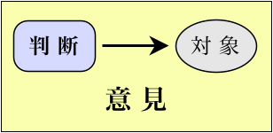
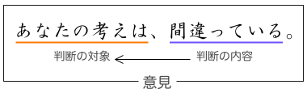
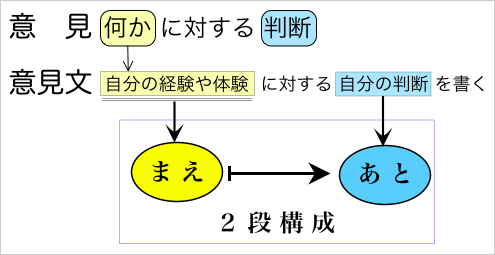
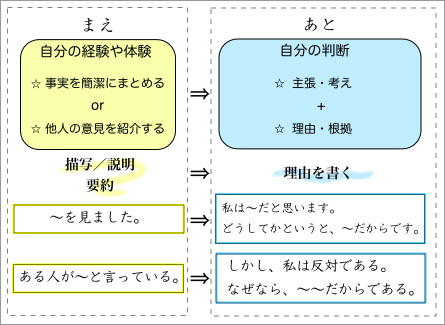

感想文と意見文
作文には、感想文と意見文とがある。
感想文は、自分の感想を書いた作文のことである。一方、意見文は、自分の意見を書いた作文のことである。
感想文とは？
感想文は、自分の感想を書いた作文のことである。
感想とは、何かについての自分の気持ちや感情のことである。感想文では、自分の経験や体験について〈楽しかった〉、〈うれしかった〉、〈嫌だった〉などの気持ちや感情を書くことになる。
意見文とは？
意見文は、自分の意見を書いた作文のことである。
意見とは、何かについての自分の判断のことである。

ここで、判断というのは、自分なりの基準によって自分の考えを決めるということである。たとえば、〈正しい〉、〈間違っている〉、〈良い〉、〈悪い〉、〈多分…だろう〉、〈必ず…はずだ〉などは、判断の具体的な例である。
つまり、意見は、『《判断の対象》は〈判断の内容〉である』という形で表わされるものであるといえる。たとえば、「あなたの考えは、間違っている。」というのは、意見を述べた文である。

意見文とは、自分の経験や体験を判断の対象として、〈正しい〉、〈間違っている〉などの判断の内容を書くことになる。
意見文の構成
意見文の構成では、２段構成が基本となる。【参考 → 「二段構成」】

具体的には、１段目に自分の経験や体験をまとめ、２段目に自分の判断を書くようにするとよいだろう。
２段構成の意見文
２段構成の意見文では、１段目に事実、２段目に意見を書くようにするとよい。

自分の体験や自分の見た出来事をもとに意見文を書くときには、１段目に事実（出来事）を簡潔にまとめて書くようにする。【参考→ 描写と説明】
一方、他人が書いた文章や他人が発表した意見をもとに意見文を書くときには、１段目に要約を示すようにする。【参考→ 文章の要約】
また、２段目に意見（判断・主張）を書くときには、その理由・根拠もあわせて書くようにする。【参考→ 理由を書く】
- 自分の経験や体験を書く
- 【参考ページ】→ 描写と説明
- 自分が見聞きした他人の意見や考えを書く
- 【参考ページ】→ 文章の要約
- 理由・根拠を書く
- 【参考ページ】→ 理由を書く